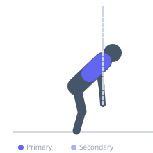

Exercise guide / Band Pull-Apart (Underhand Grip)
Band Pull-Apart (Underhand Grip)
The underhand (supinated) grip band pull-apart shifts emphasis from the overhand version toward the lower trapezius and posterior deltoid, while also incorporating greater biceps tendon stress and external rotation. The supinated grip forces the humeral head into a more externally rotated position throughout the movement, which can be both a corrective exercise cue for those with internally rotated posture and a tool for targeting slightly different scapular retractor fibers than the standard overhand pull-apart.
Primary muscles
deltoid posterior
trapezius lower
Secondary muscles
rhomboid major
trapezius middle
infraspinatus
Equipment
Resistance Band (Loop / Mini Band)


Starting position
- Hold a resistance band with an underhand (supinated) grip, hands shoulder-width apart, arms extended in front at shoulder height. Palms face the ceiling.
Setup
- Use a light resistance band. The supinated grip is the defining feature — ensure palms face up throughout the movement.
Steps
- Step 1: Hold the band underhand at shoulder height, arms extended.
- Step 2: Pull the band apart by moving the arms outward and backward.
- Step 3: Continue until the band touches the chest, maintaining the supinated grip.
- Step 4: Squeeze the scapulae together and hold for a moment.
- Step 5: Return under control to the starting position.
Coaching cues
- Palms face up the whole time
- Pull through the rear deltoid
- Feel the scapulae squeeze at the end
Breathing
- Exhale as you pull apart, inhale as you return.
Range of motion
- Band starts at shoulder height with arms forward, pulled to chest-contact at the rear.
Tempo
- 2-1-2-0
Common mistakes
- Letting the grip rotate to neutral or pronated during the pull
- Using a band that is too heavy, causing the elbows to bend excessively
Safety
- Ensure the band is in good condition before use — worn bands can snap
Training
- hypertrophy: 15–25 reps
- hypertrophy: 2–4 sets
- Rest: {'hypertrophy': 45}